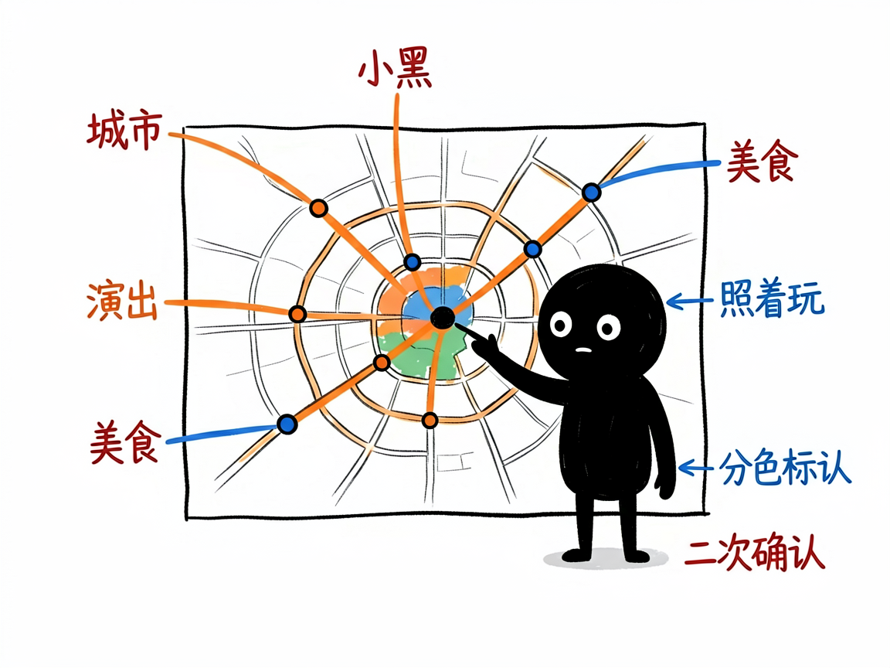

下周末去哪个城市玩？它把一周末的活动、演出、美食、地铁全查齐 —— weekend-city-trip 介绍
周五晚上你突然想：下周末去趟成都/广州/杭州吧，但又懒得一个个去刷小红书、查演唱会排期、找美食街、研究地铁怎么坐。真要自己调研，光是"这周末有啥活动"就能花掉一个晚上。
weekend-city-trip 就是来解决这件事的。
它专做"中国城市的短期（本周末 / 下周末 / 未来一个月）旅游调研"，一次性把 11 类信息查齐：小红书近期活动、演唱会、集市、球赛、博物馆、优惠门票、喜茶门店、美食街、city walk 路线、5A 景区、地铁路线，最后整理成一份结构清晰的文字攻略，想看地图还能给你标出来。你给它"城市 + 时间"，它还你一份能直接照着玩的周末攻略。
它到底能做什么
- 锁定时间窗口：自动算出"本周末 / 下周末 / 未来一个月"对应的具体日期，专门找近期、未来的活动，避免翻到过时的旧闻。
- 11 个方向一网打尽：从演出赛事到优惠门票、从网红打卡到地铁出口，按统一模板一次查全。
- 质量把关：查完会做完整性、准确性、可执行性检查——演出缺时间场馆、信息跨城市串台、价格太旧，都会补查或标注"出行前请二次确认"。
- 可选地图版：如果你要，它能把报告里的真实地点抽出来，用高德地图标成一张可交互的网页地图（按 11 类分色标记）。
- 可选网页版：纯文字攻略也能转成排版好看、能直接打印成 PDF 的网页。

怎么用
你不需要记任何命令。在 codex / workbuddy 等 agent 装好 weekend-city-trip 技能后，直接对 AI 说话就行： 场景 1：下周末去广州怎么玩 你：调研一下广州下周末有什么好玩的，演出、集市、美食、地铁都帮我查齐。 AI：它按流程搜完、整合成一份结构清晰的攻略，覆盖 11 类信息，并把结果整理成一份能直接照着玩的报告。 场景 2：要一张能看的地图 你：攻略里这些地点帮我标到地图上，按类型分色，我想一眼看分布。 AI：它把报告里的真实地点抽出来，用高德地图生成一张可交互的网页地图，11 类信息分色标好。 场景 3：想打印带走 你：这份攻略排版好看点，我要导成 PDF 带在路上看。 AI：它把纯文字攻略转成排版精美的网页版，你可以直接打印成 PDF。
谁适合用
- 想周末短途出游、懒得自己做功课的普通用户（通过带这个技能的 AI 助手使用）。
- 做旅游内容、需要快速产出城市攻略的人。
- 做 AI 工具、要把"城市周末调研"做成标准化流程的人。
一点说明
它是一套 AI 技能，不是独立 APP——你是在 AI 助手对话框里发一句话，它替你做搜索、抽地点、写报告。它依赖搜索接口和高德地图密钥（需你自己申请配置，文档不内置任何密钥）；只覆盖中国城市、且是短期出游，海外城市或长期旅居不在范围内。报告里部分票价、地铁出口等信息可能偏旧，它会在文末提示你"出行前二次确认"。具体能力以项目文档为准。